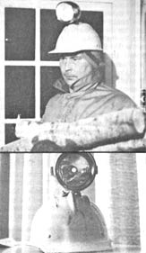

When you've got a case of those midnight wood-hauling blues .. .
Many's the time when - after a day or so away from home - we've had to "moonlight" in order to bring in a 24-hour wood supply. In such instances, one of us used to carry a flashlight (it's absolutely essential to illuminate the obstacle course between our back door and woodpile), but that solution kept one hand occupied . . . a hand that could have been put to better use getting the wood-carrying job done quickly.
Then, on a particularly bitter cold night (when we would have given up half of next summer to get back into the house a minute faster), we hit on the obvious solution: a miner's hat! Unfortunately, upon pricing the custom headgear, we found that the full outfit - composed of helmet, bracket, lamp, and charger - could cost as much as $165!
Well, we're not the kind of folks who give up easily. After a little drawing-board work, we devised a homemade lighted helmet that not only does the job for us, but cost just $9.00 to assemble.
We simply obtained a plain old hard hat and an inexpensive battery-operated bicycle headlamp. It was then a simple matter to mark the bracket mounting holes on the helmet (after determining the best balance point), drill the openings, and attach the light with nuts and bolts!
Now, when a late night fuel shortage strikes, one of us simply "plays Rudolph" and leads the way to the pile . . . then four hands pitch in to get our firewood - and ourselves - back to the warm house in jig time!
|
 |
|
|